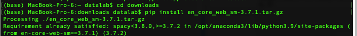

Moral Foundation Dictionary#
MoralStrength的主页：oaraque/moral-foundations
原文献 Oscar Araque, Lorenzo Gatti, Kyriaki Kalimeri (2020) MoralStrength: Exploiting a moral lexicon and embedding similarity for moral foundations prediction, Knowledge-Based Systems,Volume 191,105184 https://doi.org/10.1016/j.knosys.2019.105184
MoralStrength: Exploiting a moral lexicon and embedding similarity for moral foundations prediction#
Abstract:
Moral rhetoric plays a fundamental role in how we perceive and interpret the information we receive, greatly influencing our decision-making process. Especially when it comes to controversial social and political issues, our opinions and attitudes are hardly ever based on evidence alone.
The Moral Foundations Dictionary (MFD) was developed to operationalize moral values in the text. In this study, we present MoralStrength, a lexicon of approximately 1,000 lemmas, obtained as an extension of the Moral Foundations Dictionary, based on WordNet synsets.
Moreover, for each lemma it provides with a crowdsourced numeric assessment of Moral Valence, indicating the strength with which a lemma is expressing the specific value.
We evaluated the predictive potentials of this moral lexicon, defining three utilization approaches of increased complexity, ranging from lemmas’ statistical properties to a deep learning approach of word embeddings based on semantic similarity.
Logistic regression models trained on the features extracted from MoralStrength, significantly outperformed the current state-of-the-art, reaching an F1-score of 87.6% over the previous 62.4% (p-value <0.01), and an average F1-Score of 86.25% over six different datasets.
Such findings pave the way for further research, allowing for an in-depth understanding of moral narratives in text for a wide range of social issues.
pip install moralstrength
Requirement already satisfied: moralstrength in /opt/anaconda3/lib/python3.9/site-packages (0.2.13)
Requirement already satisfied: scikit-learn in /opt/anaconda3/lib/python3.9/site-packages (from moralstrength) (1.3.0)
Requirement already satisfied: spacy in /opt/anaconda3/lib/python3.9/site-packages (from moralstrength) (3.7.2)
Requirement already satisfied: pandas in /opt/anaconda3/lib/python3.9/site-packages (from moralstrength) (1.3.4)
Requirement already satisfied: gsitk in /opt/anaconda3/lib/python3.9/site-packages (from moralstrength) (0.2.5)
Requirement already satisfied: numpy in /opt/anaconda3/lib/python3.9/site-packages (from moralstrength) (1.22.4)
Requirement already satisfied: beautifulsoup4 in /opt/anaconda3/lib/python3.9/site-packages (from gsitk->moralstrength) (4.10.0)
Requirement already satisfied: gensim in /opt/anaconda3/lib/python3.9/site-packages (from gsitk->moralstrength) (4.3.1)
Requirement already satisfied: pyyaml in /opt/anaconda3/lib/python3.9/site-packages (from gsitk->moralstrength) (6.0)
Requirement already satisfied: nltk in /opt/anaconda3/lib/python3.9/site-packages (from gsitk->moralstrength) (3.6.5)
Requirement already satisfied: pytreebank in /opt/anaconda3/lib/python3.9/site-packages (from gsitk->moralstrength) (0.2.7)
Requirement already satisfied: lxml in /opt/anaconda3/lib/python3.9/site-packages (from gsitk->moralstrength) (4.6.3)
Requirement already satisfied: pytest in /opt/anaconda3/lib/python3.9/site-packages (from gsitk->moralstrength) (6.2.4)
Requirement already satisfied: soupsieve>1.2 in /opt/anaconda3/lib/python3.9/site-packages (from beautifulsoup4->gsitk->moralstrength) (2.2.1)
Requirement already satisfied: scipy>=1.7.0 in /opt/anaconda3/lib/python3.9/site-packages (from gensim->gsitk->moralstrength) (1.7.1)
Requirement already satisfied: smart-open>=1.8.1 in /opt/anaconda3/lib/python3.9/site-packages (from gensim->gsitk->moralstrength) (5.2.1)
Requirement already satisfied: click in /opt/anaconda3/lib/python3.9/site-packages (from nltk->gsitk->moralstrength) (8.0.3)
Requirement already satisfied: joblib in /opt/anaconda3/lib/python3.9/site-packages (from nltk->gsitk->moralstrength) (1.3.1)
Requirement already satisfied: regex>=2021.8.3 in /opt/anaconda3/lib/python3.9/site-packages (from nltk->gsitk->moralstrength) (2021.8.3)
Requirement already satisfied: tqdm in /opt/anaconda3/lib/python3.9/site-packages (from nltk->gsitk->moralstrength) (4.62.3)
Requirement already satisfied: python-dateutil>=2.7.3 in /opt/anaconda3/lib/python3.9/site-packages (from pandas->moralstrength) (2.8.2)
Requirement already satisfied: pytz>=2017.3 in /opt/anaconda3/lib/python3.9/site-packages (from pandas->moralstrength) (2021.3)
Requirement already satisfied: six>=1.5 in /opt/anaconda3/lib/python3.9/site-packages (from python-dateutil>=2.7.3->pandas->moralstrength) (1.16.0)
Requirement already satisfied: attrs>=19.2.0 in /opt/anaconda3/lib/python3.9/site-packages (from pytest->gsitk->moralstrength) (21.2.0)
Requirement already satisfied: iniconfig in /opt/anaconda3/lib/python3.9/site-packages (from pytest->gsitk->moralstrength) (1.1.1)
Requirement already satisfied: packaging in /opt/anaconda3/lib/python3.9/site-packages (from pytest->gsitk->moralstrength) (21.0)
Requirement already satisfied: pluggy<1.0.0a1,>=0.12 in /opt/anaconda3/lib/python3.9/site-packages (from pytest->gsitk->moralstrength) (0.13.1)
Requirement already satisfied: py>=1.8.2 in /opt/anaconda3/lib/python3.9/site-packages (from pytest->gsitk->moralstrength) (1.10.0)
Requirement already satisfied: toml in /opt/anaconda3/lib/python3.9/site-packages (from pytest->gsitk->moralstrength) (0.10.2)
Requirement already satisfied: pyparsing>=2.0.2 in /opt/anaconda3/lib/python3.9/site-packages (from packaging->pytest->gsitk->moralstrength) (3.0.4)
Requirement already satisfied: threadpoolctl>=2.0.0 in /opt/anaconda3/lib/python3.9/site-packages (from scikit-learn->moralstrength) (2.2.0)
Requirement already satisfied: thinc<8.3.0,>=8.1.8 in /opt/anaconda3/lib/python3.9/site-packages (from spacy->moralstrength) (8.2.1)
Requirement already satisfied: setuptools in /opt/anaconda3/lib/python3.9/site-packages (from spacy->moralstrength) (58.0.4)
Requirement already satisfied: catalogue<2.1.0,>=2.0.6 in /opt/anaconda3/lib/python3.9/site-packages (from spacy->moralstrength) (2.0.10)
Requirement already satisfied: spacy-legacy<3.1.0,>=3.0.11 in /opt/anaconda3/lib/python3.9/site-packages (from spacy->moralstrength) (3.0.12)
Requirement already satisfied: murmurhash<1.1.0,>=0.28.0 in /opt/anaconda3/lib/python3.9/site-packages (from spacy->moralstrength) (1.0.10)
Requirement already satisfied: requests<3.0.0,>=2.13.0 in /opt/anaconda3/lib/python3.9/site-packages (from spacy->moralstrength) (2.26.0)
Requirement already satisfied: weasel<0.4.0,>=0.1.0 in /opt/anaconda3/lib/python3.9/site-packages (from spacy->moralstrength) (0.3.4)
Requirement already satisfied: preshed<3.1.0,>=3.0.2 in /opt/anaconda3/lib/python3.9/site-packages (from spacy->moralstrength) (3.0.9)
Requirement already satisfied: wasabi<1.2.0,>=0.9.1 in /opt/anaconda3/lib/python3.9/site-packages (from spacy->moralstrength) (1.1.2)
Requirement already satisfied: jinja2 in /opt/anaconda3/lib/python3.9/site-packages (from spacy->moralstrength) (2.11.3)
Requirement already satisfied: langcodes<4.0.0,>=3.2.0 in /opt/anaconda3/lib/python3.9/site-packages (from spacy->moralstrength) (3.3.0)
Requirement already satisfied: cymem<2.1.0,>=2.0.2 in /opt/anaconda3/lib/python3.9/site-packages (from spacy->moralstrength) (2.0.8)
Requirement already satisfied: srsly<3.0.0,>=2.4.3 in /opt/anaconda3/lib/python3.9/site-packages (from spacy->moralstrength) (2.4.8)
Requirement already satisfied: typer<0.10.0,>=0.3.0 in /opt/anaconda3/lib/python3.9/site-packages (from spacy->moralstrength) (0.9.0)
Requirement already satisfied: pydantic!=1.8,!=1.8.1,<3.0.0,>=1.7.4 in /opt/anaconda3/lib/python3.9/site-packages (from spacy->moralstrength) (2.5.2)
Requirement already satisfied: spacy-loggers<2.0.0,>=1.0.0 in /opt/anaconda3/lib/python3.9/site-packages (from spacy->moralstrength) (1.0.5)
Requirement already satisfied: typing-extensions>=4.6.1 in /opt/anaconda3/lib/python3.9/site-packages (from pydantic!=1.8,!=1.8.1,<3.0.0,>=1.7.4->spacy->moralstrength) (4.8.0)
Requirement already satisfied: pydantic-core==2.14.5 in /opt/anaconda3/lib/python3.9/site-packages (from pydantic!=1.8,!=1.8.1,<3.0.0,>=1.7.4->spacy->moralstrength) (2.14.5)
Requirement already satisfied: annotated-types>=0.4.0 in /opt/anaconda3/lib/python3.9/site-packages (from pydantic!=1.8,!=1.8.1,<3.0.0,>=1.7.4->spacy->moralstrength) (0.6.0)
Requirement already satisfied: charset-normalizer~=2.0.0 in /opt/anaconda3/lib/python3.9/site-packages (from requests<3.0.0,>=2.13.0->spacy->moralstrength) (2.0.4)
Requirement already satisfied: urllib3<1.27,>=1.21.1 in /opt/anaconda3/lib/python3.9/site-packages (from requests<3.0.0,>=2.13.0->spacy->moralstrength) (1.26.7)
Requirement already satisfied: idna<4,>=2.5 in /opt/anaconda3/lib/python3.9/site-packages (from requests<3.0.0,>=2.13.0->spacy->moralstrength) (3.2)
Requirement already satisfied: certifi>=2017.4.17 in /opt/anaconda3/lib/python3.9/site-packages (from requests<3.0.0,>=2.13.0->spacy->moralstrength) (2021.10.8)
Requirement already satisfied: confection<1.0.0,>=0.0.1 in /opt/anaconda3/lib/python3.9/site-packages (from thinc<8.3.0,>=8.1.8->spacy->moralstrength) (0.1.4)
Requirement already satisfied: blis<0.8.0,>=0.7.8 in /opt/anaconda3/lib/python3.9/site-packages (from thinc<8.3.0,>=8.1.8->spacy->moralstrength) (0.7.11)
Requirement already satisfied: cloudpathlib<0.17.0,>=0.7.0 in /opt/anaconda3/lib/python3.9/site-packages (from weasel<0.4.0,>=0.1.0->spacy->moralstrength) (0.16.0)
Requirement already satisfied: MarkupSafe>=0.23 in /opt/anaconda3/lib/python3.9/site-packages (from jinja2->spacy->moralstrength) (1.1.1)
Note: you may need to restart the kernel to use updated packages.
手动安装en_core_web_sm#
moralstrength依赖spacy，后者需要安装en_core_web_sm
找到最新版本 explosion/spacy-models
选择下载 en_core_web_sm-3.7.1.tar.gz
pip install /path_to_it/en_core_web_sm-3.7.1.tar.gz

from moralstrength import lexicon_use
lexicon_use.select_version("latest")
moralstrength.word_moral_annotations('care')
{'care': 8.799999999999999,
'fairness': nan,
'loyalty': nan,
'authority': nan,
'purity': nan}
text = "PLS help #HASHTAG's family. No one prepares for this. They are in need of any assistance you can offer"
moralstrength.string_moral_value(text, moral='care')
/opt/anaconda3/lib/python3.9/site-packages/sklearn/base.py:347: InconsistentVersionWarning: Trying to unpickle estimator LogisticRegression from version 1.1.3 when using version 1.3.0. This might lead to breaking code or invalid results. Use at your own risk. For more info please refer to:
https://scikit-learn.org/stable/model_persistence.html#security-maintainability-limitations
warnings.warn(
/opt/anaconda3/lib/python3.9/site-packages/sklearn/base.py:347: InconsistentVersionWarning: Trying to unpickle estimator CountVectorizer from version 1.1.3 when using version 1.3.0. This might lead to breaking code or invalid results. Use at your own risk. For more info please refer to:
https://scikit-learn.org/stable/model_persistence.html#security-maintainability-limitations
warnings.warn(
0.9982871348452281
from moralstrength.moralstrength import estimate_morals
texts = '''My dog is very loyal to me.
My cat is not loyal, but understands my authority.
He did not want to break the router, he was fixing it.
It is not fair! She cheated on the exams.
Are you pure of heart? Because I am sure not.
Will you take care of me? I am sad.'''
texts = texts.split('\n')
result = estimate_morals(texts, process=True) # set to false if text is alredy pre-processed
print(result)
care fairness loyalty authority purity
0 NaN NaN 8.875 5.1250 NaN
1 NaN NaN 8.875 6.9625 NaN
2 NaN NaN NaN NaN NaN
3 NaN 9.0 NaN NaN NaN
4 NaN NaN NaN NaN 9.0
5 8.8 NaN NaN NaN NaN
/opt/anaconda3/lib/python3.9/site-packages/spacy/pipeline/lemmatizer.py:211: UserWarning: [W108] The rule-based lemmatizer did not find POS annotation for one or more tokens. Check that your pipeline includes components that assign token.pos, typically 'tagger'+'attribute_ruler' or 'morphologizer'.
warnings.warn(Warnings.W108)
Chinese Moral Foundation Dictionary 2.0#
Chinese Moral Foundation Dictionary 2.0 for Python. This project was inspired by civictechlab/cmfd
Introduction#
The Chinese Moral Foundation Dictionary 2.0 (C-MFD 2.0) is a dictionary to assist the automated moral intuition detection and analysis in the Chinese language context. Starting from the existing Chinese translation of the English MFD, two experts selected additional Chinese moral concepts and used word2vec to fetch related words from an extensive Chinese dictionary. Four experts went through four-rounds of coding, followed by the validation from 202 crowd coders. The CMFD identifies not only the classic five moral foundations but also several potentially novel moral foundation candidates.
pip install cmfd
Requirement already satisfied: cmfd in /opt/anaconda3/lib/python3.9/site-packages (0.2.1)
Note: you may need to restart the kernel to use updated packages.
import cmfd
result = cmfd.moral_quantity(text_test, duplicate=False, with_word=True)
print(result)
URLError: <urlopen error [Errno 61] Connection refused>
import pandas as pd
df = pd.read_csv(r"https://raw.githubusercontent.com/CivicTechLab/CMFD/main/cmfd_civictech.csv")
import pandas as pd
df = pd.read_csv("./data/cmfd_civictech.csv")
import jieba
moral_dict = {}
for word in set(df['chinese'].tolist()):
jieba.add_word(word)
for category, df_item in df.groupby(by=['foundation']):
moral_dict[category] = df_item['chinese'].tolist()
Building prefix dict from the default dictionary ...
Dumping model to file cache /var/folders/8b/hhnbt0nd4zsg2qhxc28q23w80000gn/T/jieba.cache
Loading model cost 1.067 seconds.
Prefix dict has been built successfully.
text_test = """ 她一见他就倾心， 但他却偏要为非作歹。 结果两人败俱伤， 她心碎， 他惨遭报应。 他本来是一个英勇战斗的将军， 但因为一纸空文， 被诬陷入狱。 再加上尔虞我诈的诡计， 他最终丧失了自己的荣誉和尊严。 他曾认为自己是无所不能， 却不知道一念之间， 一切都会化为乌有。 如果他当初没有欺骗她， 如果他当初没有撕毁那张契约， 也许他们现在还在幸福的生活中。 现在， 他身陷囹圄， 只能思念那些曾经的日子。 他懊悔不已， 只能悔恨自己的软弱和自私。 他希望能有机会改正错误， 重新取回自己的荣誉， 但现实却是那么残酷。"""
def get_moral_dict():
return moral_dict
def moral_quantity(text, duplicate=True, normalize=True, with_word=False):
"""
Calculate the number or proportion of moral dictionaries in Chinese text
:param text: chinese text
:param duplicate: keep repeated moral words
:param normalize: calculate the ratio
:param with_word: output with moral words
:return:
"""
if isinstance(text, str):
# The total number of matched moral words
word_total = 0
# dict of moral word
moral_word = {}
# Store the number corresponding to the moral vocabulary
moral_num = {}
if duplicate:
for key in moral_dict.keys():
moral_word[key] = []
for word in jieba.cut(text):
for key in moral_dict.keys():
if word in moral_dict[key]:
moral_word[key].append(word)
else:
for key in moral_dict.keys():
moral_word[key] = set()
for word in jieba.cut(text):
for key in moral_dict.keys():
if word in moral_dict[key]:
moral_word[key].add(word)
for key in moral_word.keys():
word_total += len(moral_word[key])
if word_total == 0:
return None
if normalize:
for key in moral_word.keys():
moral_num[key] = len(moral_word[key]) / word_total
else:
moral_num[key] = len(moral_word[key])
if with_word:
moral_word_num = {}
for key in moral_dict.keys():
moral_word_num[key] = {}
moral_word_num[key]['num'] = moral_num[key]
moral_word_num[key]['word'] = ";".join(moral_word[key])
return moral_word_num
else:
return moral_num
return None
moral_quantity(text_test)
{'altr': 0.0,
'auth': 0.26666666666666666,
'care': 0.26666666666666666,
'dili': 0.0,
'fair': 0.26666666666666666,
'general': 0.06666666666666667,
'libe': 0.0,
'loya': 0.06666666666666667,
'mode': 0.0,
'resi': 0.0,
'sanc': 0.06666666666666667,
'wast': 0.0}